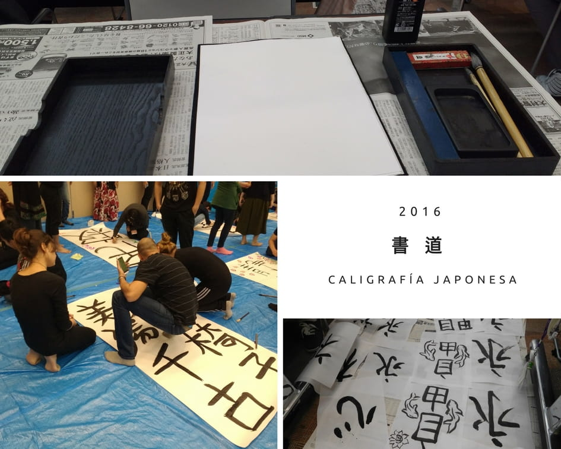

20 cosas sorprendentes que pasan en Japón Parte 2
Esta entrada hace parte de la serie de artículos sobre las curiosidades que observé en el país del Sol Naciente mientras participaba de una beca de 6 meses en la Japan Foundation, con sede en Saitama. Si te perdiste la entrada anterior, te recomiendo ver la primera parte de esta lista de curiosidades.
1. Obsenidades en japonés

Como ya conté en el artículo anterior, fue bastante curioso conocer japoneses que estuvieran relacionados con la cultura latina de alguna u otra forma. Para esta ocasión, tome la foto de un libro para aprender portugués de un amigo japonés donde, por primera vez, vi una lista de obsenidades que no tenía ni la menor idea que existían en éste idioma. En su momento me dio mucha risa y quise compartirlo con ustedes.
2. Vivir en Japan Foundation

Haberme ganado una beca en la Japan Foundation es hasta ahora, una de las mejores cosas que me pudo haber pasado en la vida. Allí tuvimos clases de japonés, de como enseñar japones, salidas de campo, talleres sobre cultura y arte japonés, casi que todos los días. Además de las grandes amistades que hice, las cuales se volvieron practicamente en mi familia en Japón durante el transcurso de esos 6 meses.
Si eres profesor de japonés y cumples con los requisitos que ellos te exigen, es una experiencia que recomiendo 100%.
3. Ir a templos

Visitar templos, contagiarse de su paz y armonía, ver monumentos milenarios, dar una ofrenda y orar son actividades del día a día como turista. Llegará un punto en que te acostumbrarás y cambiarás de plan. Aunque a algunas personas nunca les aburrirá, pues todos los templos tienen algo nuevo que mostrar, a pesar de que se parecen muchísimo entre unos y otros.
4. Yurukyara

Todo, absolutamente todo tiene un yurukyara (mascota). Desde las prefecturas, las tiendas, hasta los edificios y las empresas. Es increíble como todo tiene su mascota en Japón.
5. Calefacción y humidificadores
Resulta que en invierno la humedad baja, por lo que debes usar un humidificador si no quieres despertar en la noche con un nudo en la garganta. Usarlos son una ciencia poco común para una persona de clima tropical como yo.
Por otro lado, lo bueno de Japón si llegas a viajar en invierno es que encontrarás calefacción en la mayoría de lugares, incluyendo los trenes. Solo deberás preocuparte por el frío cuando camines en exteriores.
6. Shodo

Si pensabas que escribir kanji era difícil es porque no has visto el shodo. Este arte inclusive tiene clubes de colegio y materias en universidades para lograr volverte todo un maestro en el arte de escribir kanji con pinceles. Si lo logras hacer, dejarás de escribir como todo mortal para crear magia en el papel.
Tip: En las hyakuen shop encuentras utensilios para hacer shodo a muy buen precio.
7. Halal, la comida del islam

Debido a que Indonesia y varios países cercanos pertenecen a esta religión, es usual encontrarte con restaurantes que sirven comida Halal. Son restaurantes que no sirven cerdo, no venden alcohol y tampoco usan alcohol para preparar alimentos. Además de ello el método en como cortan y preparan las carnes debe ser especial, de acuerdo a como lo enseña su religión. Para mi, fue mi primera experiencia conociendo y haciendo amigos cuya religión fuera el islam.
8. Momiji

Es el nombre que se le da al momento de ver las hojas rojas de otoño. Es cuando el paisaje se prepara para volverse invierno, siendo esta etapa, todo un espectaculo para tus ojos.
9. Hospedandome con una familia japonesa
Dormir en futón, bañarte de noche, caminar descalzo dejando tus zapatos por fuera de la casa, comer auténtica comida japonesa y escuchar expresiones de personas japonesas de avanzada edad se convierten en una de esas experiencias que querrás vivir, al menos, una vez en la vida.
10. Ver la Nieve por primera vez

Sin palabras. Te conectas con tu niño interior y simplemente empiezas a jugar con ella. Esta foto la tome en Nikko.
11. Cumpliendo años en Japón

De por si estar en Japon era uno de mis sueños, ahora imagina pasar tu cumpleaños en la tierra del Sol naciente. Según he visto en youtubers y lo que me han contado mis amigos, lo que usualmente hacen los japoneses para celebrar un cumpleaños es ir un fin de semana a comer, tomar algo o ir al karaoke. En mi caso, cerveza japonesa, karaoke y el propio pudín casero hicieron parte de la celebración.
12. Comiendo huevo negro

Cuando los escuche no lo podía creer. Son huevos que por fuera están pintados de negro y por dentro son huevos comunes y corrientes. La leyenda urbana dice que si comes 1 huevo negro rejuvenecerás 8 años. Yo comí 2, hagan las cuentas :) Tal es la superstición que inclusive tienen un museo del huevo negro!!!
13. El gran monte Fuji

Si vas a Japón, debes ir a ver el gran monte Fuji. En mi caso tuve la oportunidad de verlo en invierno cuando tiene nieve arriba. Se ve espectacular, imponente, majestuoso. Hay una cierta temporada del año en que se puede escalar, creo que antes de que empieze el otoño.
14. Navidad en Japón
Fue tal cual como había escrito e investigado años atrás en 7 datos curiosos sobre la navidad en Japón. El 24 y 25 de diciembre son días que practicamente parecen San Valentin, donde muchas parejas salen a la calle y tienen cenas y salidas romanticas. En estos días encontrar puesto o una reservación en un restaurante es casi que imposible.
Por cierto, también comí el infaltable postre navideño con cerezas arriba :)
15. Año nuevo en Japón
La celebración, para mi, empezó desde que esperamos las campanadas el 31 de diciembre en la noche en el templo Meiji Jingu. Estaba llenísimo de gente, hasta el punto de que la policia controlaba el acceso al lugar. Estuvimos alrededor de unas 2 o 3 horas de pie esperando el suceso mientras caminabamos entre el tumulto de gente a 1 metro por hora. Aún así valió la pena asistir. En el lugar también habían muchos extranjeros.
16. Osechi ryouri
Cada plato y alimento tienen un significado. Lo que se estila es que las mujeres de la casa preparan esta comida unos dias antes de las festividades, siendo este manjar lo que se suele comer al comienzo del año. Las personas que no tienen tiempo lo pueden comprar hecho, sin embargo, la tradición es prepararlo en casa. Todo lo que ven en la foto no lo alcanzamos a comer, quedó comida para el día siguiente.
17. El Gundam en Odaiba
El Gundam en Odaiba era otro de esos atractivos que debías visitar al ir a Japón. En Odaiba hay un cafe Gundam y tiendas pequeñas donde venden todo relacionado a Gundam. El Gundam estaba ubicado frente a un centro comercial, en una plaza grande donde tenías la oportunidad de tomarte fotos con la estatua y verlo desde lejos mientras caminabas por ella. De noche ofrecen un espectáculo con luces y animaciones relacionadas con el anime.
Para el día de hoy, creo que ya lo deben de haber desmontado, pero no te preocupes, volverán ha ensamblar una versión de Gundam más reciente.
18. El museo de las Ilusiones ópticas en Odaiba

En Odaiba también encontrarás el museo de las ilusiones ópticas, donde ves como las pinturas prácticamente toman vida. Dejaré que las imágenes hablen por si solas.


Todo lo que ven está pintado. Inclusive la silla roja que aparece en la imagen.

No, no es un tiburón real jeje.
19. Las calles angostas

Yo pensaba que nisiquiera un carro podría caber en calles tan diminutas, pero hasta los carros en Japón son angostos! Las calles con un sólo carril, donde hay bicicletas y transeuntes pasando, no son un problema para los automóviles que con mucha paciencia y educación entre ellos, se ceden unos a otros la vía para pasar. Por cierto, a eso agregenle el hecho de que lo hacen sin pitar el carro. Por un momento pensé que los claxxon de los carros en Japón no funcionaban jejeje. Este tipo de educación es algo que nunca creo que podré ver en mi ciudad Barranquilla.
20. Las pancartas en la calle
Las pancartas en las calles eran bastante peculiares, pues el rango de avisos en las calles variaba desde publicidad sobria, estilo anime, y sólo uno que otro que eran un poco raros. Juzguen ustedes por la imágen.
Hasta aquí llega el artículo del día de hoy. En una próxima entrada seguiré con un nuevo listado de cosas que llamaron mi atención mientras estaba en Japón. またね
Ilustración principal por Carlos Insignares
Artículos Relacionados

20 cosas sorprendentes que pasan en Japón Parte 1

Guía de estudio para el JLPT N4: Kanji